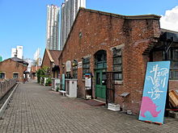
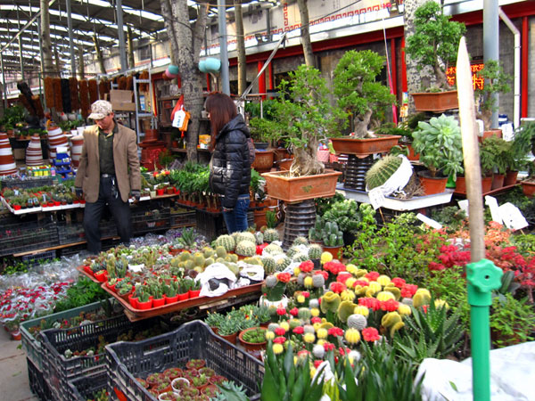

<ion-content padding (click)="pinReset();">
	<ion-searchbar placeholder = "Where to, Captain?" spellcheck = true ></ion-searchbar>

	<ion-slides slidesPerView="5" spaceBetween="10"	loop zoom [centeredSlides]="true" (ionSlideDidChange)="slideChange($event)">
		<ion-slide>
			<ion-avatar>
				
			</ion-avatar>
		</ion-slide>
		<ion-slide>
			<ion-avatar>
				
			</ion-avatar>
		</ion-slide>
		<ion-slide>
			<ion-avatar>
				
			</ion-avatar>
		</ion-slide>
		<ion-slide>
			<ion-avatar>
				
			</ion-avatar>
		</ion-slide>
		<ion-slide>
			<ion-avatar>
				
			</ion-avatar>
		</ion-slide>
	</ion-slides>

	<div class="pin_menu pin_menu_inactive">
		<ion-icon class="plus" name="add" (click)="addtoRoute($event);"></ion-icon>
		<ion-icon class="menu" name="menu"></ion-icon>
	</div>

	<div class="pin8_menu pin_menu_inactive">
		<ion-icon class="plus" name="add" (click)="addtoRoute($event);"></ion-icon>
		<ion-icon class="menu" name="menu"></ion-icon>
	</div>

	<div class="pin15_menu pin_menu_inactive">
		<ion-icon class="plus" name="add" (click)="addtoRoute($event);"></ion-icon>
		<ion-icon class="menu" name="menu"></ion-icon>
	</div>
	<div class="pin1 pin_bronze pin"> </div>
	<div class="pin2 pin_bronze pin"> </div>
	<div class="pin3 pin_bronze pin"></div>
	<div class="pin4 pin_bronze pin"></div>
	<div class="pin5 pin_bronze pin" (click)="pinClicked($event);"></div>
	<div class="pin6 pin_bronze pin"></div>
	<div class="pin7 pin_bronze pin"></div>
	<div class="pin8 pin_bronze pin" (click)="pin8Clicked($event);"></div>
	<div class="pin9 pin_silver pin"></div>
	<div class="pin10 pin_silver pin"></div>
	<div class="pin11 pin_silver pin"></div>
	<div class="pin12 pin_silver pin"></div>
	<div class="pin13 pin_gold pin"></div>
	<div class="pin14 pin_gold pin"></div>
	<div class="pin15 pin_gold pin" (click)="pin15Clicked($event);"></div>

	<svg version="1.1" id="Layer_1" xmlns="http://www.w3.org/2000/svg" xmlns:xlink="http://www.w3.org/1999/xlink" x="0px" y="0px" width="340px" height="333px" viewBox="0 0 340 333" enable-background="new 0 0 340 333" xml:space="preserve">
		<!-- <path class="path" fill="#FFFFFF" fill-opacity="0.0" stroke="#FFFFFF" stroke-width="4" stroke-miterlimit="10" 
		d="M66.039,133.545c0,0-21-57,18-67s49-4,65,8
		s30,41,53,27s66,4,58,32s-5,44,18,57s22,46,0,45s-54-40-68-16s-40,88-83,48s11-61-11-80s-79-7-70-41
		C46.039,146.545,53.039,128.545,66.039,133.545z"/> -->

		<path class="newroute" fill="#FFFFFF" fill-opacity="0.0" stroke="transparent" stroke-width="4" 
 		d="M 180 170 L 180 190 M 180 190 L 210 150 M 210 150 L 200 120 M 200 120 L 170 130 M 170 130 L 165 110 M 165 110 L 185 105 M 185 105 L180 70 M 180 70 L 250 60" /> 

		 <!-- <path fill="#FFFFFF" stroke="#FFFFFF" stroke-width="4" 
		d="M 185.5 439 C 14.5 342 78.5 139 178.5 192 M 189.5 440 C 342.5 435 292.5 
		149 181.5 192 M 176.5 165 L 135.5 110 Q 120.5 60 45.5 73 M 383.5 131 Q 219.5 
		19 209.5 65 L 186.5 153" /> -->


		<!-- <path d="M 215.5 543 C 170.5 411 81.5 392 144.5 325 M 266.5 777 C 317.5 704 333.5 683 374.5 630 M 373.5 627 L 330.5 567 Q 257.5 578 259.5 580 M 259.5 579 Q 250.5 539 252.5 539 L 211.5 541 " > -->


		<!-- //215.5,543,170.5,411,81.5,395,144.5,325,280.5,754,317.5,704,333.5,683,374.5,630,373.5,627,
			330.5,567,257.5,578,259.5,580,259.5,579,250.5,539,252.5,539,211.5,541 -->
	</svg>

	<ion-card class="loc_intro hide">
		<ion-card-content>
			<div class="loc_intro_pic"></div>
			<div class="loc_intro_text"><p>Temple Street Night Market</p>
				When night falls and neon buzzes, Hong Kong's liveliest market rattles into life. 
				Covering multiple city blocks from Man Ming Lane...</div>
		</ion-card-content>
	</ion-card>
	
	<ion-card class="loc8_intro hide">
		<ion-card-content>
			<div class="loc_intro_pic"></div>
			<div class="loc_intro_text"><p>Cattle Depot Artist Village</p>
				Cattle Depot Artist Village is located on 63 Ma Tau Kok Road. The site was originally used as a slaughterhouse from 1908 to 1999...</div>
		</ion-card-content>
	</ion-card>
	<ion-card class="loc15_intro hide">
		<ion-card-content>
			<div class="loc_intro_pic"></div>
			<div class="loc_intro_text"><p>Flower Market</p>
				Bustling open-air market with vendors selling a variety of cut blooms, potted plants, seeds & bulbs....</div>
		</ion-card-content>
	</ion-card>
</ion-content>